作业明细
5 章作业题号 + 教材原题完整文字。
教材：操作系统教程（第 6 版），骆斌、葛季栋、费翔林 著，高等教育出版社，2020-12-01
本文档把 20 张教材题目截图全部 OCR 成文字。【作业】 标记的题号是老师指定要做的；其余题目以备复习参考。原图已清理。
习题一（第一章 计算机操作系统概述，P33-P34）
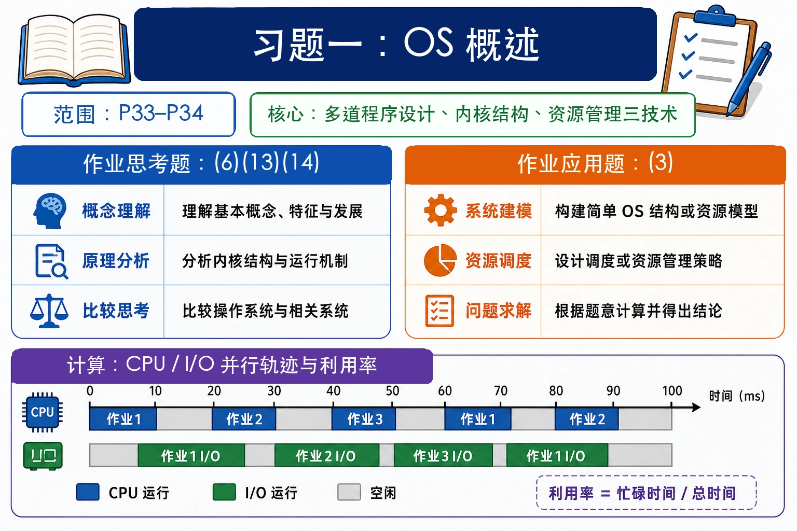
1. 思考题
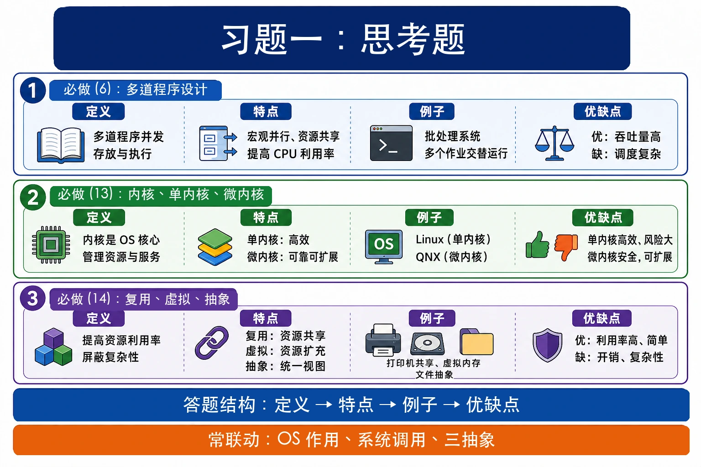
| 题号 | 题面 | |
|---|---|---|
| (1) | 简述现代计算机系统的组成及其层次结构。 | |
| (2) | 试述计算机系统的用户视图与程序员视图。 | |
| (3) | 什么是操作系统？操作系统在计算机系统中的主要作用是什么？ | |
| (4) | 什么是批处理操作系统？什么是分时操作系统？什么是实时操作系统？ | |
| (5) | 计算机系统的资源可分为哪些类型？试举例说明。 | |
| (6) | 什么是多道程序设计？多道程序设计有哪些特点？ | 【作业】 |
| (7) | 操作系统的操作控制接口可分为哪些类型？试简述之。 | |
| (8) | 什么是系统调用？可分为哪些类型？ | |
| (9) | 试述现代操作系统的常用人机交互方式。 | |
| (10) | 什么是 WIMP 界面？ | |
| (11) | 什么是虚拟现实系统？试述其基本思路。 | |
| (12) | 组成操作系统的构件有哪些？试简单叙述之。 | |
| (13) | 什么是操作系统内核？解释单内核操作系统与微内核操作系统的区别及其优缺点。 | 【作业】 |
| (14) | 试述操作系统资源管理的主要技术：资源复用、资源虚拟和资源抽象。 | 【作业】 |
| (15) | 试述操作系统的三个基础抽象：进程抽象、虚存抽象和文件抽象。 |
2. 应用题
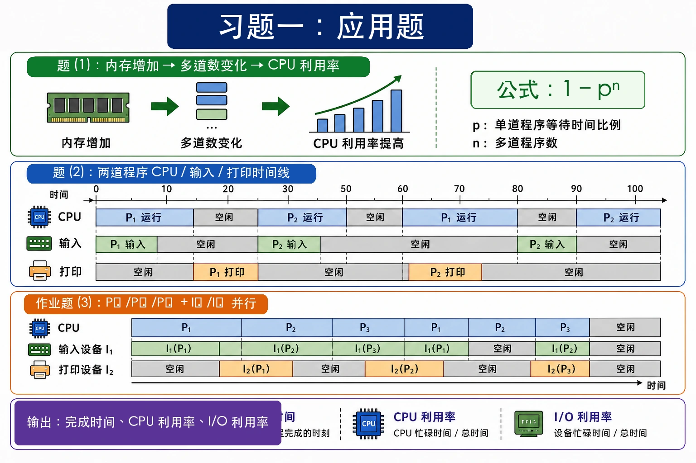
(1) 有一台计算机，其内存为 1 MB，操作系统占用 200 KB，各个用户进程分别占用 200 KB。假设用户进程等待 I/O 操作的时间为 80%，若增加 1 MB 内存空间，则 CPU 的利用率能够提高多少？
(2) 某计算机系统有一台输入机和一台打印机，现有两道程序投入运行，且程序 A 先开始运行，程序 B 后开始运行。程序 A 的运行轨迹为：计算 50 ms，打印 100 ms，再计算 50 ms，打印 100 ms 结束。程序 B 的运行轨迹为：计算 50 ms，输入 80 ms，再计算 100 ms 结束。试说明：① 两道程序运行时，CPU 是否空闲等待？若是，在哪段时间内等待？为什么等待？② 程序 A、B 是否有等待 CPU 的情况？若有，指出发生等待的时刻。
(3) 【作业】 某计算机拥有单 CPU 和两台 I/O 设备 (I₁、I₂)，支持多道程序设计，同时投入三个程序运行。其执行轨迹如下：
P₁: I₂(30 ms), CPU(10 ms), I₁(30 ms), CPU(10 ms), I₂(20 ms)
P₂: I₁(20 ms), CPU(20 ms), I₂(40 ms)
P₃: CPU(30 ms), I₁(20 ms), CPU(10 ms), I₁(10 ms)
如果 CPU、I₁ 和 I₂ 并行工作，优先级从高到低依次为 P₁、P₂、P₃，CPU 可根据优先级抢占，但设备 I₁ 和 I₂ 不可抢占。试求：① 每个运行程序从投入到完成分别所需要的时间；② CPU 的利用率；③ I/O 设备利用率。
习题二（第二章 处理器管理，P77-P78）
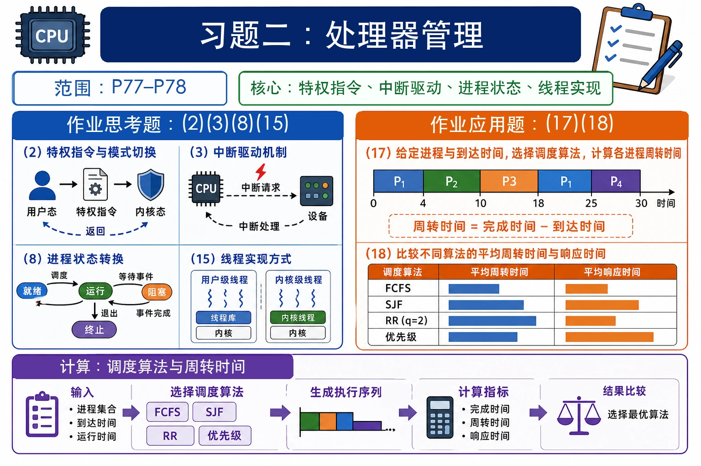
1. 思考题
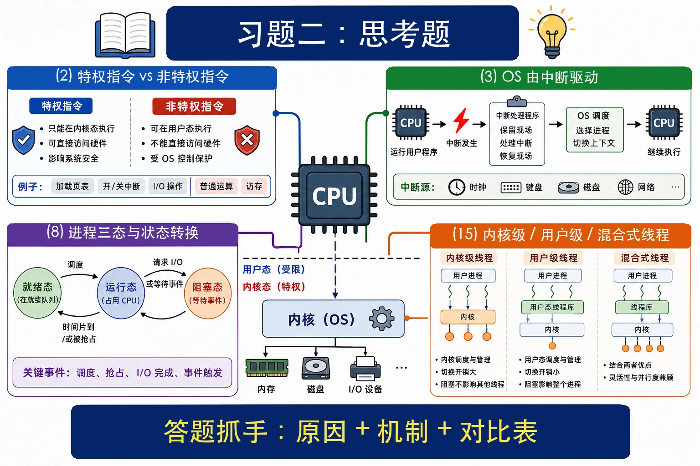
| 题号 | 题面 | |
|---|---|---|
| (1) | 什么是程序状态字 (PSW)？它有何作用？ | |
| (2) | 为什么将机器指令分成特权指令和非特权指令？ | 【作业】 |
| (3) | 为什么说操作系统是由中断驱动的？试述中断在操作系统中的作用。 | 【作业】 |
| (4) | 试根据中断请求信号的来源对中断事件进行分类。 | |
| (5) | 硬件是如何发现与响应中断事件的？操作系统是如何处理中断事件的？ | |
| (6) | 什么是中断屏蔽？哪些中断事件可被屏蔽？什么是中断优先级？为什么要为中断事件划分等级？ | |
| (7) | 什么是进程？操作系统为什么要引入进程的概念？ | |
| (8) | 进程最基本的状态有哪些？哪些事件可能引起不同状态间的转换？ | 【作业】 |
| (9) | 进程新建态和终止态的主要作用分别是什么？ | |
| (10) | 什么是进程的挂起状态？ | |
| (11) | 什么是进程控制块 (PCB)？它包含哪些基本信息？ | |
| (12) | 什么是进程上下文？试述其主要内容。 | |
| (13) | 什么是进程切换？什么是模式切换？试述两种切换的主要步骤并对它们进行比较。 | |
| (14) | 试述多线程环境中进程和线程的定义。 | |
| (15) | 什么是内核级线程？什么是用户级线程？什么是混合式线程？试对它们进行比较。 | 【作业】 |
| (16) | 试述作业、进程、线程和程序之间的关系。 | |
| (17) | 处理器调度分为哪几种类型？简述各类调度的主要任务。 | |
| (18) | 在时间片轮转调度算法中，可根据哪些因素确定时间片的长度？ | |
| (19) | 为什么分级调度算法能较好地满足各类用户的需求？ | |
| (20) | 在分级调度算法中，为什么对不同就绪队列中的进程规定使用不同长度的时间片？ |
2. 应用题
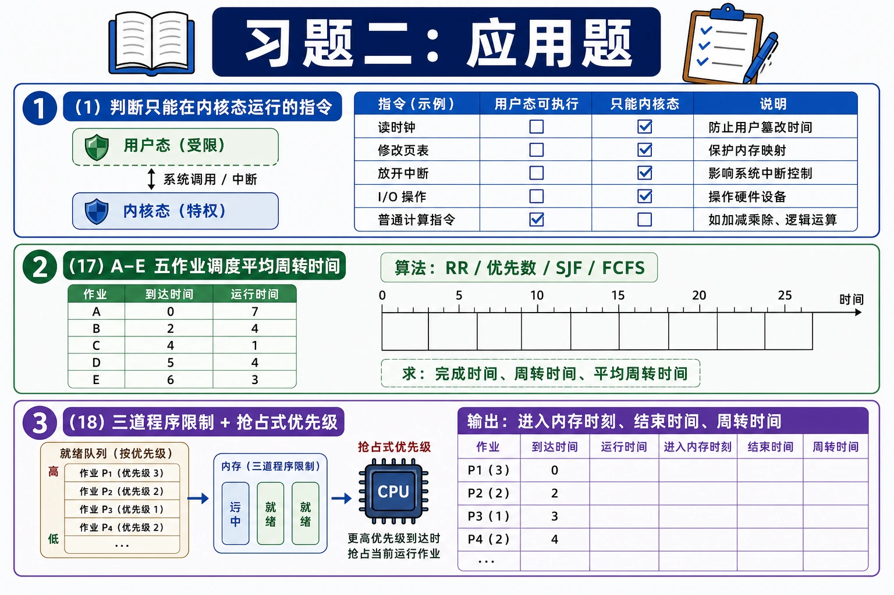
(1) 下列指令中，哪些只能在内核态运行？① 读时钟日期；② 陷入指令；③ 设置时钟日期；④ 加载 PSW；⑤ 置特殊寄存器；⑥ 启动 I/O 指令。
(17) 【作业】 现有 5 个批处理作业 A~E 均已到达一台按单道方式执行的处理器，其运行时间分别为 2 min、4 min、6 min、8 min 和 10 min，各自的优先级分别规定为 1、2、3、4 和 5（5 是最高级）。对于时间片轮转调度算法（时间片长度为 2 min）、优先数调度算法、最短作业优先调度算法、先来先服务调度算法（按作业到达次序 C、D、B、E、A），在忽略进程切换时间的前提下，计算出平均作业周转时间。
(18) 【作业】 在一个只支持三道程序同时运行的多道程序系统中，作业调度采用最短作业优先调度算法，进程调度采用以优先数为基础的抢占式调度算法。在下表所示的作业序列中，优先数即为进程优先数，优先数越小则优先级越高。
| 作业名 | 到达时刻 | 估计运行时间/min | 优先数 |
|---|---|---|---|
| A | 10:00 | 40 | 5 |
| B | 10:20 | 30 | 3 |
| C | 10:30 | 60 | 4 |
| D | 10:50 | 20 | 6 |
| E | 11:00 | 20 | 4 |
| F | 11:10 | 10 | 4 |
试填充下表：
| 作业名 | 进入内存时刻 | 运行结束时间 | 作业周转时间/min |
|---|---|---|---|
| A | |||
| B | |||
| C | |||
| D | |||
| E | |||
| F |
平均作业周转时间 T = ?
习题三（第三章 存储管理，P113-P114）
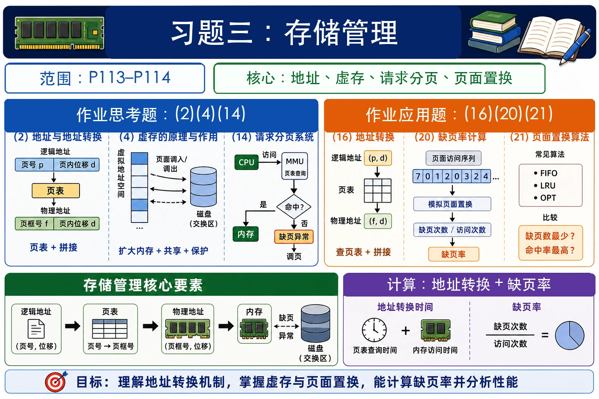
1. 思考题
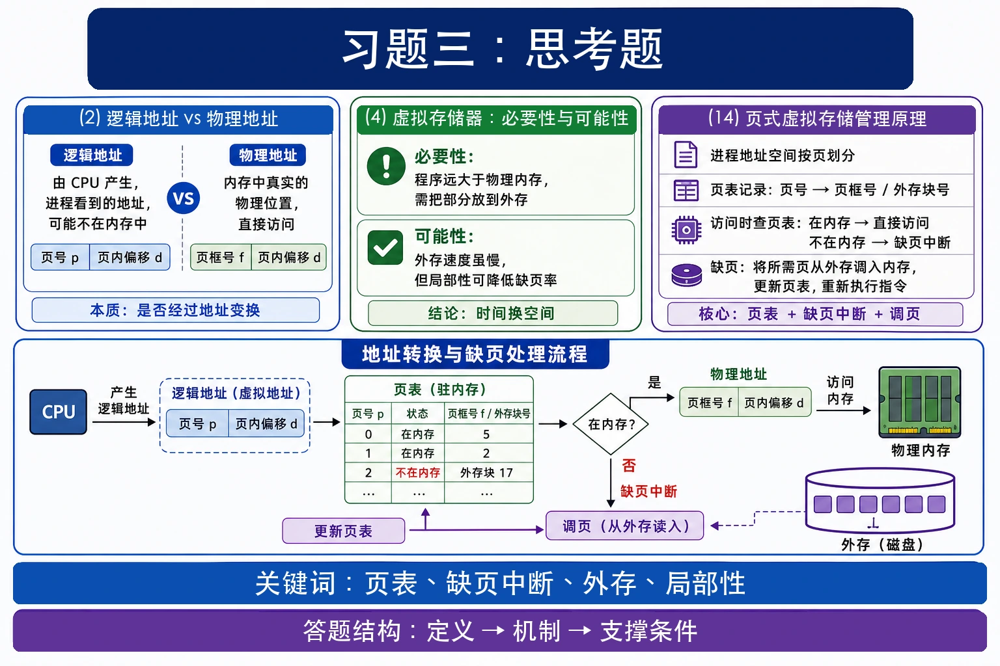
| 题号 | 题面 | |
|---|---|---|
| (1) | 试述存储管理的基本功能。 | |
| (2) | 什么是逻辑地址？什么是物理地址？ | 【作业】 |
| (3) | 什么是地址转换？哪些方法可以实现地址转换？ | |
| (4) | 什么是虚拟存储器？列举采用虚拟存储技术的必要性和可能性。 | 【作业】 |
| (5) | 试讨论虚拟存储器容量与地址总线宽度、内存容量和外存容量之间的关系。 | |
| (11) | 什么是移动技术？应在什么情况下采用这种技术？ | |
| (12) | 在页式存储器中实现程序共享时，共享程序的页号是否一定要相同？为什么？ | |
| (13) | 在页式存储管理中，决定页面大小的主要因素是什么？ | |
| (14) | 试述页式虚拟存储管理的实现原理。 | 【作业】 |
| (15) | 实现页式虚拟存储器必须要有哪些软硬件支撑？ | |
| (16) | 试述缺页中断与一般中断之间的区别。 | |
| (17) | 什么是抖动？试述抖动产生的主要原因。 |
2. 应用题
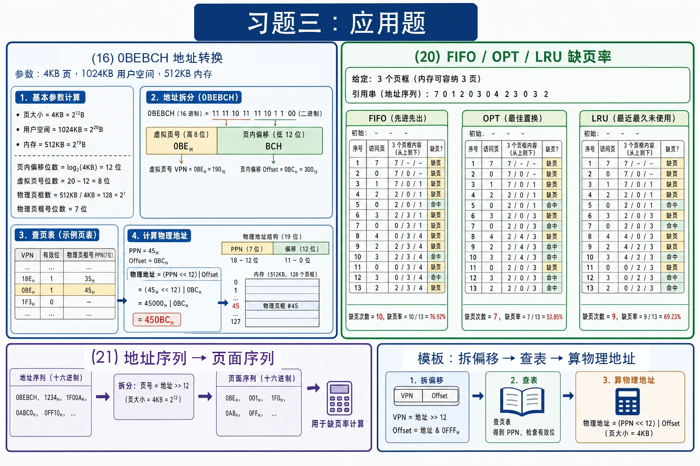
(4) 在可变分区存储管理中，按地址排列的内存空闲区大小依次为 10 KB、4 KB、20 KB、18 KB、7 KB、9 KB、12 KB 和 15 KB。依次考虑以下两个连续存储区的请求序列：① 12 KB、10 KB、9 KB；② 12 KB、10 KB、15 KB、18 KB。请回答：分别使用最先适配算法、最优适配算法、最坏适配算法和下次适配算法，哪些空闲区将被使用？
(16) 【作业】 一个页式虚拟存储管理系统中的用户空间为 1 024 KB，页面大小为 4 KB，内存空间为 512 KB。已知用户的 10、11、12、13 号虚页分得的内存页框号为 62、78、25、36，试将逻辑地址 0BEBCH 转换成对应的物理地址（以十六进制表示）。
(17) 一台计算机的内存空间为 1 024 个页面，页表置于内存中，从页表中读取一字的开销是 500 ns。为了减少开销，使用有 32 个字的快表，已知其查找速度是 100 ns。若要把平均开销降至 200 ns，该快表的命中率应为多少？
(20) 【作业】 在一个页式虚拟存储管理系统中，一个程序运行的页面走向是 1-2-3-4-2-1-5-6-2-1-2-3-7-6-3-2-1-2-3-6。分别使用 FIFO、OPT 和 LRU 页面调度算法，对于分配给程序 3 个、4 个、5 个和 6 个页框的情况，求出访问过程中所发生的缺页中断次数和缺页中断率。
(21) 【作业】 在一个页式虚拟存储管理系统中，进程访问地址的序列为 10-11-104-170-73-305-180-240-244-445-467-366。请回答：① 如果页面大小为 100 B，给出页面访问序列；② 若进程分得 3 个页框，采用 FIFO 和 LRU 页面调度算法，计算缺页中断率。
习题四（第四章 设备管理，P153-P154）
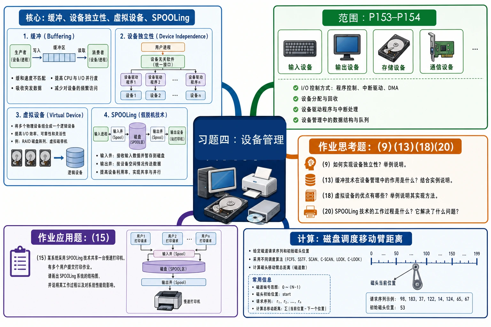
1. 思考题
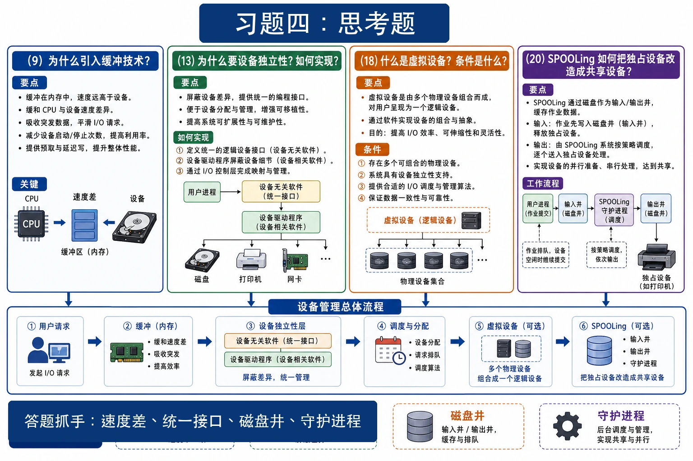
| 题号 | 题面 | |
|---|---|---|
| (8) | 试述 I/O 软件的分层结构及各层次的主要功能。 | |
| (9) | 为什么要引入缓冲技术？其基本思想是什么？ | 【作业】 |
| (10) | 试述常用的缓冲技术。 | |
| (11) | 设单缓冲情况下，磁盘将一块数据输入缓冲区所花费的时间为 T，系统从缓冲区将数据传送到用户区所花费的时间为 M，处理器处理这块数据所花费的时间为 C。试证明系统对一块数据的处理时间为 max(C,T)+M。 | |
| (12) | I/O 设备与 CPU 并行工作的基础是什么？ | |
| (13) | 为什么要引入设备独立性？如何实现设备独立性？ | 【作业】 |
| (17) | 什么是磁盘的驱动调度？目前常用的磁盘驱动调度算法有哪些？ | |
| (18) | 什么是虚拟设备？实现虚拟设备的主要条件是什么？ | 【作业】 |
| (19) | 什么是井？什么是输入井？什么是输出井？试述井管理程序的基本功能及工作原理。 | |
| (20) | SPOOLing 系统是如何将独占型设备改造成共享型设备的？ | 【作业】 |
2. 应用题
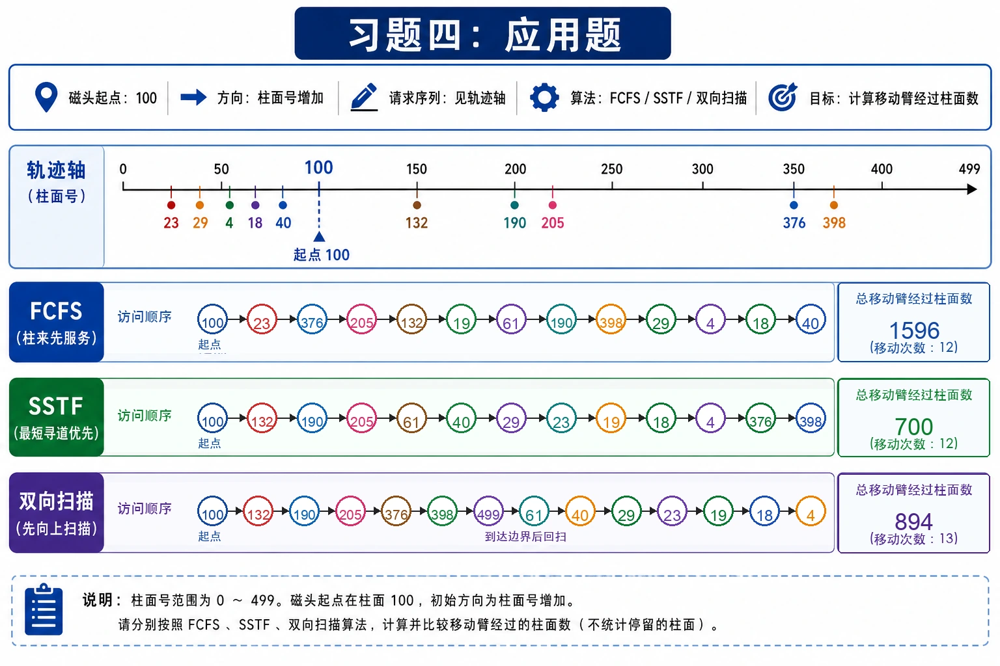
(14) 若磁头当前位于第 100 号柱面，且正向柱面号减小的方向移动。现有磁盘读写请求队列，柱面号依次为 190、10、160、80、90、125、30、20、29、140、25。若分别采用最短查找时间优先算法和电梯调度算法，试计算出各种算法中移动臂所经过的柱面数。
(15) 【作业】 若磁头当前位于第 100 号柱面，且正向柱面号增加的方向移动。现有磁盘读写请求队列，柱面号依次为 23、376、205、132、19、61、190、398、29、4、18、40。若采用先来先服务算法、最短查找时间优先算法和双向扫描算法，试计算出各种算法中移动臂所经过的柱面数。
习题六（第六章 并发程序设计，P240-P241）
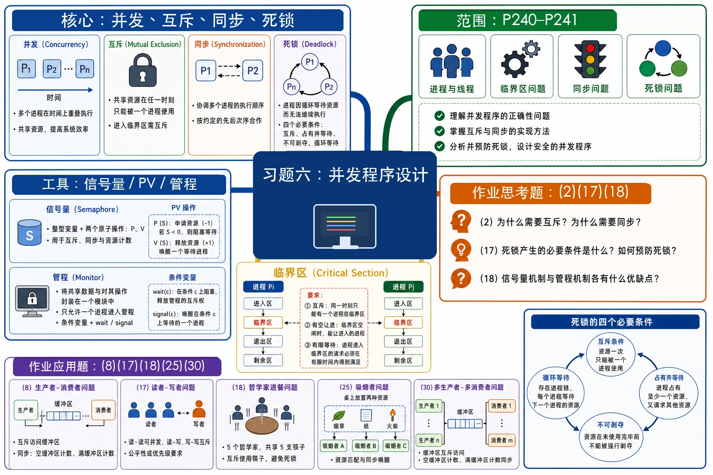
第五章未列入作业。
1. 思考题
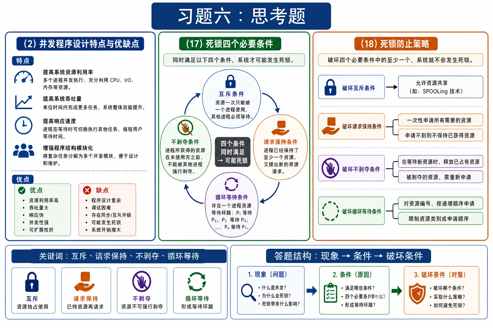
| 题号 | 题面 | |
|---|---|---|
| (1) | 试述顺序程序设计的特点以及采用顺序程序设计的优缺点。 | |
| (2) | 试述并发程序设计的特点以及采用并发程序设计的优缺点。 | 【作业】 |
| (3) | 解释并发进程的无关性和交互性。 | |
| (4) | 两个交互的并发进程在执行过程中可能产生与时间有关的错误，试举例说明这类错误的表现。 | |
| (16) | 已有信号量和 PV 操作可用做同步工具，为什么还要考虑进程间的高级通信机制？ | |
| (17) | 试述产生死锁的必要条件。 | 【作业】 |
| (18) | 列举死锁的各种防止策略。 | 【作业】 |
| (19) | 什么是银行家算法？试述其基本思想。 | |
| (20) | 如何判断系统内是否发生死锁？列举死锁的解除方法。 |
2. 应用题
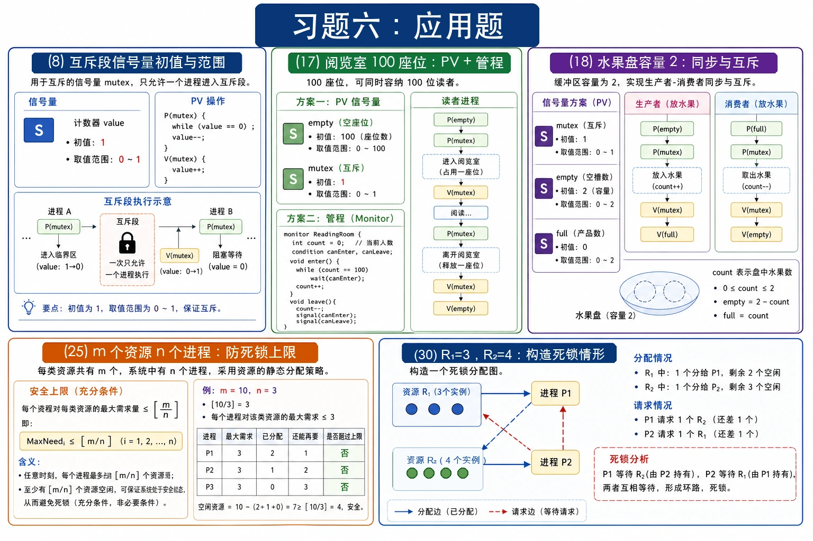
(8) 【作业】 设有 n 个进程共享一个互斥段，如果：① 每次只允许一个进程进入互斥段；② 每次最多允许 m 个进程（m≤n）同时进入互斥段。试问：以上两种情况下所采用的信号量初值是否相同？试给出信号量值的变化范围。
(9) 现有三个并发进程：R 负责从输入设备读人信息块，M 负责对信息块进行加工处理，P 负责打印输出信息块。若提供：① 一个缓冲区，可放置 K 个信息块；② 两个缓冲区，每个缓冲区可放置 K 个信息块。试用信号量和 PV 操作描述以上两种情况下三个进程能正确工作的流程。
(16) 试用管程实现磁盘调度的电梯调度算法。
(17) 【作业】 有一个阅览室，读者进入时必须先在一张登记表上登记，此表为每个座位列出一个表目，包括座位号、姓名，读者离开时要注销登记信息；假如阅览室共有 100 个座位。试用：① 信号量和 PV 操作；② 管程，实现用户进程的同步算法。
(18) 【作业】 桌上有一只盘子，最多可以容纳两个水果，每次仅能放入或取出一个水果。爸爸向盘子中放苹果，妈妈向盘子中放橘子，两个儿子专吃盘子里的橘子，两个女儿专吃盘子里的苹果。试用：① 信号量和 PV 操作；② 管程，实现爸爸、妈妈、儿子、女儿间的同步与互斥关系。
(19) 设儿童小汽车生产线上有一只大的储存柜，其中有 N 个槽（N 为 5 的整数倍数且其值不小于 5）。每个槽可以存放一个车架或一个车轮。设有三组生产工人，其活动如下……（题目未截全，可参阅教材 P244）
(25) 【作业】 系统有同类资源 m 个，被 n 个进程共享，当 m>n 和 m≤n 时，问：每个进程最多可以请求多少这类资源，使系统一定不会发生死锁？
(26) 假设系统有 n 个进程共享 m 个资源，已知每个进程一次只能申请或释放一个资源，且每个进程最多需要 m 个资源，所有进程的资源需求总数少于 m+n。证明系统此时不会产生死锁。
(30) 【作业】 某系统有 R₁ 设备 3 台，R₂ 设备 4 台，它们被 P₁、P₂、P₃ 和 P₄ 进程共享。已知这 4 个进程按以下顺序使用设备：
申请 R₁ → 申请 R₂ → 申请 R₁ → 释放 R₁ → 释放 R₂ → 释放 R₁
试问：系统运行过程中可能产生死锁吗？若有可能，请列举一种情况。
作业题快速清单（供查表）
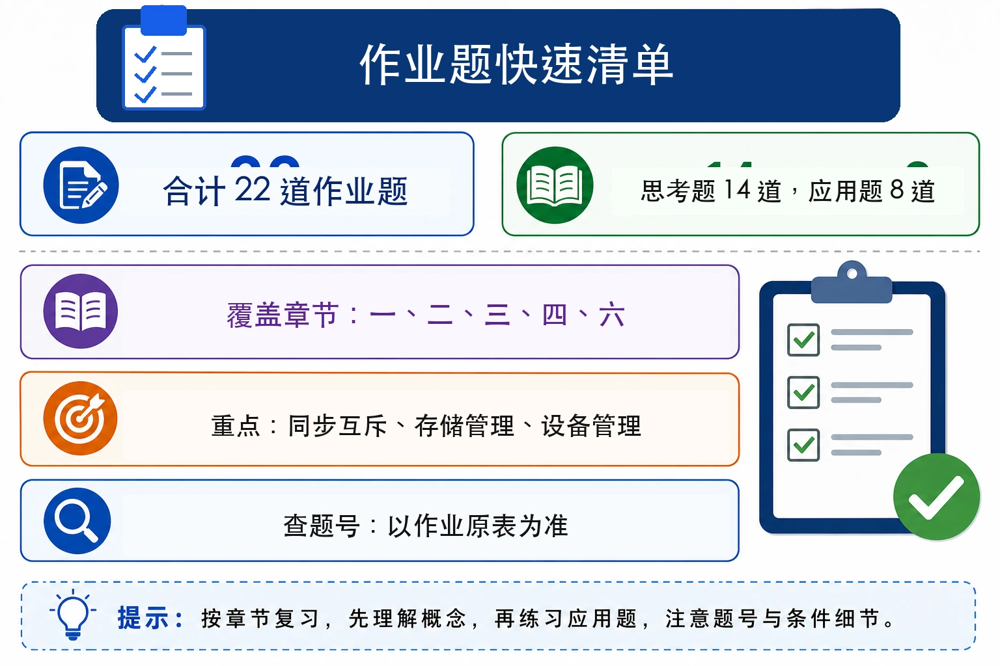
| 章 | 思考题（作业） | 应用题（作业） |
|---|---|---|
| 一 概述 | (6), (13), (14) | (3) |
| 二 处理器 | (2), (3), (8), (15) | (17), (18) |
| 三 存储 | (2), (4), (14) | (16), (20), (21) |
| 四 设备 | (9), (13), (18), (20) | (15) |
| 六 并发 | (2), (17), (18) | (8), (17), (18), (25), (30) |
合计 22 道作业题（思考题 14 + 应用题 8）。
与课程笔记对照
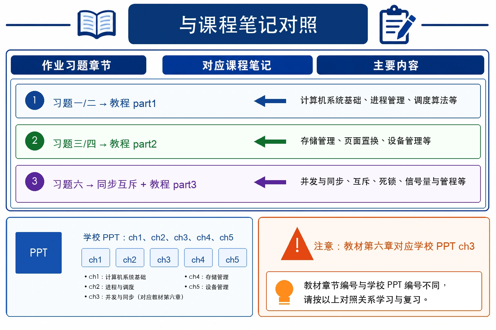
注意：教材第六章并发程序设计对应学校 PPT ch3 同步互斥（章号不一致）。